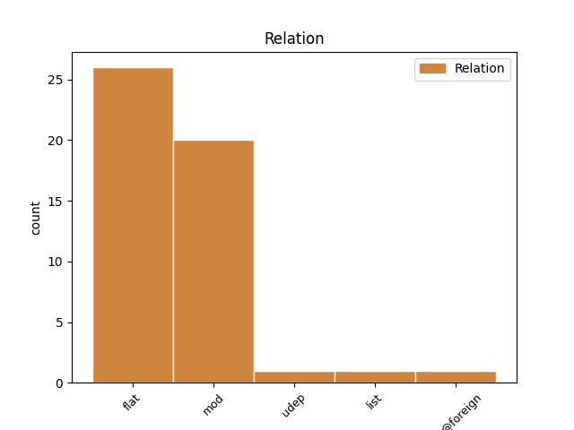

Distribution of features within this leaf

Agreement Rules sorted by frequency.
- When the dependent token is the flat multiword expression(flat) of the head token, and the head token is PROPN and the dependent token is PROPN.
1 kuid _ _ _ _ 0 _ _ _
2 teema _ _ _ _ 0 _ _ _
3 pealkirjas _ _ _ _ 0 _ _ _
4 on _ _ _ _ 0 _ _ _
5 mainiutd _ _ _ _ 0 _ _ _
6 Galaxy Galaxy PROPN S Case=Nom|Number=Sing 0 _ _ _
7 S _ _ _ _ 0 _ _ _
8 Advance Advance PROPN S Case=Nom|Number=Sing 6 flat _ _
9 millel _ _ _ _ 0 _ _ _
10 kindlasti _ _ _ _ 0 _ _ _
11 kõikuvat _ _ _ _ 0 _ _ _
12 stabilisaatorit _ _ _ _ 0 _ _ _
13 ei _ _ _ _ 0 _ _ _
14 ole _ _ _ _ 0 _ _ _
15 . _ _ _ _ 0 _ _ _
1 Oma _ _ _ _ 0 _ _ _
2 arvamust _ _ _ _ 0 _ _ _
3 avaldad _ _ _ _ 0 _ _ _
4 ja _ _ _ _ 0 _ _ _
5 Püha Püha PROPN S Case=Gen|Number=Sing 6 mod _ _
6 Vaimu Vaim PROPN S Case=Gen|Number=Sing 0 _ _ _
7 arvamust _ _ _ _ 0 _ _ _
8 sinu _ _ _ _ 0 _ _ _
9 sees _ _ _ _ 0 _ _ _
10 sedaviisi _ _ _ _ 0 _ _ _
11 alla _ _ _ _ 0 _ _ _
12 surud _ _ _ _ 0 _ _ _
13 ? _ _ _ _ 0 _ _ _
1 Ja _ _ _ _ 0 _ _ _
2 kuna _ _ _ _ 0 _ _ _
3 sa _ _ _ _ 0 _ _ _
4 teadja _ _ _ _ 0 _ _ _
5 oled _ _ _ _ 0 _ _ _
6 Hillar Hillar PROPN S Case=Nom|Number=Sing 0 _ _ _
7 Kohv _ _ _ _ 0 _ _ _
8 ise ise PRON P Case=Nom|Number=Sing|PronType=Prs|Reflex=Yes 6 mod _ _
9 siis _ _ _ _ 0 _ _ _
10 esine _ _ _ _ 0 _ _ _
11 ka _ _ _ _ 0 _ _ _
12 oma _ _ _ _ 0 _ _ _
13 nime _ _ _ _ 0 _ _ _
14 all _ _ _ _ 0 _ _ _
15 . _ _ _ _ 0 _ _ _
1 Eriti _ _ _ _ 0 _ _ _
2 närviliselt _ _ _ _ 0 _ _ _
3 sebisid _ _ _ _ 0 _ _ _
4 seal _ _ _ _ 0 _ _ _
5 ringi _ _ _ _ 0 _ _ _
6 Britney _ _ _ _ 0 _ _ _
7 Spearsi _ _ _ _ 0 _ _ _
8 mp3-d _ _ _ _ 0 _ _ _
9 , _ _ _ _ 0 _ _ _
10 mis _ _ _ _ 0 _ _ _
11 olid _ _ _ _ 0 _ _ _
12 kohe _ _ _ _ 0 _ _ _
13 kui _ _ _ _ 0 _ _ _
14 Rammsteini _ _ _ _ 0 _ _ _
15 lood _ _ _ _ 0 _ _ _
16 eesotsas _ _ _ _ 0 _ _ _
17 rummstain_DuHast_(LIVE).mp3-ga _ _ _ _ 0 _ _ _
18 oma _ _ _ _ 0 _ _ _
19 folderist _ _ _ _ 0 _ _ _
20 välja _ _ _ _ 0 _ _ _
21 ronisid _ _ _ _ 0 _ _ _
22 ja _ _ _ _ 0 _ _ _
23 suruõhuvasarate _ _ _ _ 0 _ _ _
24 , _ _ _ _ 0 _ _ _
25 kirkade _ _ _ _ 0 _ _ _
26 ja _ _ _ _ 0 _ _ _
27 bensiinikanistriga _ _ _ _ 0 _ _ _
28 ( _ _ _ _ 0 _ _ _
29 kanister _ _ _ _ 0 _ _ _
30 oli _ _ _ _ 0 _ _ _
31 päris _ _ _ _ 0 _ _ _
32 äge _ _ _ _ 0 _ _ _
33 : _ _ _ _ 0 _ _ _
34 sellele _ _ _ _ 0 _ _ _
35 oli _ _ _ _ 0 _ _ _
36 peale _ _ _ _ 0 _ _ _
37 kirjutatud _ _ _ _ 0 _ _ _
38 " _ _ _ _ 0 _ _ _
39 Wehrmacht Wehrmacht PROPN S Case=Nom|Number=Sing 0 _ _ _
40 1942 1942 NUM N Case=Nom|Number=Sing|NumForm=Digit|NumType=Card 39 mod _ SpaceAfter=No
41 " _ _ _ _ 0 _ _ _
42 ja _ _ _ _ 0 _ _ _
43 Ilmselt _ _ _ _ 0 _ _ _
44 oli _ _ _ _ 0 _ _ _
45 tegu _ _ _ _ 0 _ _ _
46 yhega _ _ _ _ 0 _ _ _
47 nendest _ _ _ _ 0 _ _ _
48 , _ _ _ _ 0 _ _ _
49 mis _ _ _ _ 0 _ _ _
50 keegi _ _ _ _ 0 _ _ _
51 kavalpea _ _ _ _ 0 _ _ _
52 sõja _ _ _ _ 0 _ _ _
53 päevil _ _ _ _ 0 _ _ _
54 kõrvale _ _ _ _ 0 _ _ _
55 pani _ _ _ _ 0 _ _ _
56 ja _ _ _ _ 0 _ _ _
57 nyyd _ _ _ _ 0 _ _ _
58 paar _ _ _ _ 0 _ _ _
59 aastat _ _ _ _ 0 _ _ _
60 tagasi _ _ _ _ 0 _ _ _
61 Hauka _ _ _ _ 0 _ _ _
62 laadal _ _ _ _ 0 _ _ _
63 saja _ _ _ _ 0 _ _ _
64 krooniga _ _ _ _ 0 _ _ _
65 maha _ _ _ _ 0 _ _ _
66 myys _ _ _ _ 0 _ _ _
67 . _ _ _ _ 0 _ _ _
1 Olen _ _ _ _ 0 _ _ _
2 ka _ _ _ _ 0 _ _ _
3 oma _ _ _ _ 0 _ _ _
4 lähedastega _ _ _ _ 0 _ _ _
5 sellest _ _ _ _ 0 _ _ _
6 rääkinud _ _ _ _ 0 _ _ _
7 , _ _ _ _ 0 _ _ _
8 ise _ _ _ _ 0 _ _ _
9 oleksin _ _ _ _ 0 _ _ _
10 rahul _ _ _ _ 0 _ _ _
11 kui _ _ _ _ 0 _ _ _
12 tuhastatakse _ _ _ _ 0 _ _ _
13 , _ _ _ _ 0 _ _ _
14 ja _ _ _ _ 0 _ _ _
15 laul _ _ _ _ 0 _ _ _
16 mida _ _ _ _ 0 _ _ _
17 võiks _ _ _ _ 0 _ _ _
18 sel _ _ _ _ 0 _ _ _
19 hetkel _ _ _ _ 0 _ _ _
20 lasta _ _ _ _ 0 _ _ _
21 vms _ _ _ _ 0 _ _ _
22 Eric Eric PROPN S Case=Nom|Number=Sing 0 _ _ _
23 Clapton _ _ _ _ 0 _ _ _
24 : _ _ _ _ 0 _ _ _
25 Tears Tears PROPN S Case=Nom|Number=Sing 22 list _ _
26 in _ _ _ _ 0 _ _ _
27 heaven _ _ _ _ 0 _ _ _
28 :) _ _ _ _ 0 _ _ _
1 Olen _ _ _ _ 0 _ _ _
2 ka _ _ _ _ 0 _ _ _
3 oma _ _ _ _ 0 _ _ _
4 lähedastega _ _ _ _ 0 _ _ _
5 sellest _ _ _ _ 0 _ _ _
6 rääkinud _ _ _ _ 0 _ _ _
7 , _ _ _ _ 0 _ _ _
8 ise _ _ _ _ 0 _ _ _
9 oleksin _ _ _ _ 0 _ _ _
10 rahul _ _ _ _ 0 _ _ _
11 kui _ _ _ _ 0 _ _ _
12 tuhastatakse _ _ _ _ 0 _ _ _
13 , _ _ _ _ 0 _ _ _
14 ja _ _ _ _ 0 _ _ _
15 laul _ _ _ _ 0 _ _ _
16 mida _ _ _ _ 0 _ _ _
17 võiks _ _ _ _ 0 _ _ _
18 sel _ _ _ _ 0 _ _ _
19 hetkel _ _ _ _ 0 _ _ _
20 lasta _ _ _ _ 0 _ _ _
21 vms _ _ _ _ 0 _ _ _
22 Eric _ _ _ _ 0 _ _ _
23 Clapton _ _ _ _ 0 _ _ _
24 : _ _ _ _ 0 _ _ _
25 Tears Tears PROPN S Case=Nom|Number=Sing 0 _ _ _
26 in in X S Case=Nom|Number=Sing 25 flat@foreign _ _
27 heaven _ _ _ _ 0 _ _ _
28 :) _ _ _ _ 0 _ _ _
Disagree Examples:
1 Pärnu Pärnu PROPN S Case=Gen|Number=Sing 0 _ _ _
2 lähistel _ _ _ _ 0 _ _ _
3 Papiniidus Papi_niidu PROPN S Case=Ine|Number=Sing 1 mod _ SpaceAfter=No
4 ? _ _ _ _ 0 _ _ _
1 Tallinnas Tallinn PROPN S Case=Ine|Number=Sing 2 udep _ _
2 Lasnamäe Lasna_mäe PROPN S Case=Nom|Number=Sing 0 _ _ _
3 ja _ _ _ _ 0 _ _ _
4 Kopli _ _ _ _ 0 _ _ _
5 , _ _ _ _ 0 _ _ _
6 Tartu _ _ _ _ 0 _ _ _
7 Hiinalinn _ _ _ _ 0 _ _ _
8 jne _ _ _ _ 0 _ _ _
9 . _ _ _ _ 0 _ _ _
1 Tallinnas _ _ _ _ 0 _ _ _
2 Lasnamäe _ _ _ _ 0 _ _ _
3 ja _ _ _ _ 0 _ _ _
4 Kopli _ _ _ _ 0 _ _ _
5 , _ _ _ _ 0 _ _ _
6 Tartu Tartu PROPN S Case=Gen|Number=Sing 7 mod _ _
7 Hiinalinn Hiinalinn PROPN S Case=Nom|Number=Sing 0 _ _ _
8 jne _ _ _ _ 0 _ _ _
9 . _ _ _ _ 0 _ _ _
1 Piilume _ _ _ _ 0 _ _ _
2 Imre Imre PROPN S Case=Nom|Number=Sing 0 _ _ _
3 Kose Kose PROPN S Case=Gen|Number=Sing 2 flat _ _
4 kööki _ _ _ _ 0 _ _ _
1 Õlidest _ _ _ _ 0 _ _ _
2 soovitab _ _ _ _ 0 _ _ _
3 Imre _ _ _ _ 0 _ _ _
4 dieedihullusele _ _ _ _ 0 _ _ _
5 vaatamata _ _ _ _ 0 _ _ _
6 kasutada _ _ _ _ 0 _ _ _
7 ainult _ _ _ _ 0 _ _ _
8 Extra Extra PROPN S Case=Nom|Number=Sing 0 _ _ _
9 Virgin’it Virgin PROPN S Case=Par|Number=Sing 8 flat _ SpaceAfter=No
10 , _ _ _ _ 0 _ _ _
11 sest _ _ _ _ 0 _ _ _
12 Light _ _ _ _ 0 _ _ _
13 on _ _ _ _ 0 _ _ _
14 oliividest _ _ _ _ 0 _ _ _
15 viies _ _ _ _ 0 _ _ _
16 või _ _ _ _ 0 _ _ _
17 kuues _ _ _ _ 0 _ _ _
18 keemiline _ _ _ _ 0 _ _ _
19 ekstraktsioon _ _ _ _ 0 _ _ _
20 , _ _ _ _ 0 _ _ _
21 mida _ _ _ _ 0 _ _ _
22 ei _ _ _ _ 0 _ _ _
23 saa _ _ _ _ 0 _ _ _
24 enam _ _ _ _ 0 _ _ _
25 toiduõliks _ _ _ _ 0 _ _ _
26 nimetada _ _ _ _ 0 _ _ _
27 . _ _ _ _ 0 _ _ _